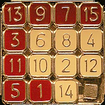
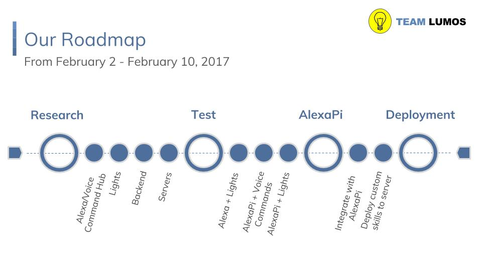
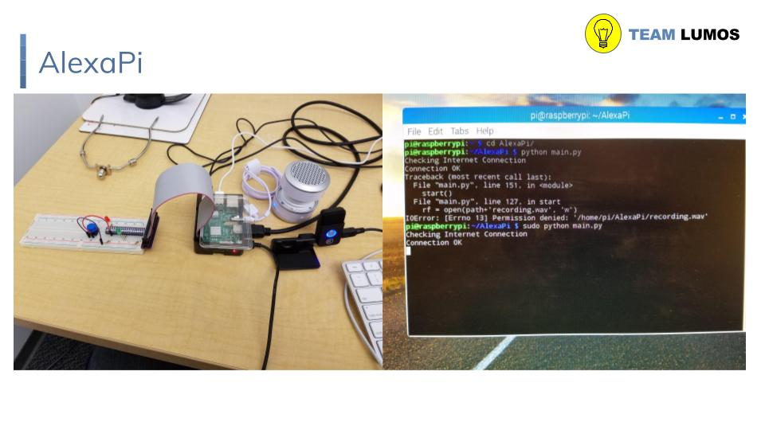

Woojae Yi

My Mission
I am a Web Developer starting up in the professional tech industry. I want to develop technology that stuns the masses and brings people together. To improve as an individual and as a professional, I promise to deliver my services with Integrity, Kindness and my Whole Self.
Background
Woojae, originally from San Diego, CA, is a UC Berkeley alumnus taking his first steps towards joining the professional tech work force in the San Francisco Greater Bay Area. He graduated from Cal with a Bachelor of Arts in Cognitive Science and was an active member of Theta Chi Fraternity, Mu Chapter.
Integrity
In simplest form, this means being honest. One way to embody integrity is "doing the right thing even when no one is watching."
My promise to keep integrity includes:
- Showing up on time
- Communicating with my team
- Asking for help and asking questions
- Providing useful feedback (i.e. ASK)
- Following proper work procedures
Part of being in integrity also means that when I fall out of it for whatever reason (such as being a human being) I will own up to it. Most of the time all it takes is and acknowledgment of being out of integrity and everybody can move on.
Kindness
Kindness does not mean "nice"; they are actually not the same thing. Being kind does mean being friendly, generous, and considerate, but it does not preclude giving constructive, truthful feedback as long as it is Actionable, Specific, and Kind (ASK).
I will bring my 100% into every day. I will also show kindness through showing respect to others and our space.
Whole Self
You can expect me to bring my intelligence, focus, creativity, and personality into each challenge every day. If I am struggling, you can expect me to be resourceful and find solutions, including asking others for help. I will be authentic with you so that all of us feel safe being authentic with each other.
This includes exposing my ignorance and being open to uncomfortable emotional and technical challenges.
I am still learning everyday so you can expect me to demonstrate effort and mastery as I continue my technical journey.
Read below for a summary of Woojae's projects and check out the External Links tab for links to his Resume and professional profiles.
TIZZLE
TIZZLE is a JavaScript tile-grid puzzle game I developed to represent a real-life puzzle I used to tinker with growing up. The original puzzle's goal was to arrange the numbers 1-15 in 4 rows, with the bottom right corner of the grid being empty. Thus, there was always one empty space for movement.
I wrote this game in order to develop puzzles with fun themes. So far, there is only the 1-15 number puzzle and the One Piece anime puzzle. Visiting its github repo on my profile (oxwootang) and you can find the instructions to play.
I hope to deploy TIZZLE soon so that it can be played live. Read the repo's README for more information on what to expect with deployment.
Let There Be Light!
By Team LUMOS, this project was developed to tackle bringing the natural sun indoors. The original pitch stemmed from my apartment having a lack of natural sunlight. I wanted to a solution that will let me mimic the timely shine of natural sunlight in my room.
What we did was install the Amazon Alexa OS onto a RaspberryPi3 to set up an "AlexaHub." This hub would be used for our voice commands, developed as custom Alexa Skills. The Alexa Skill would ping our LIFX Smart LED Bulb via LIFX's HTTP API and change the settings of the bulb.
We used DarkSky's weather API to get our geolocation's sunrise and sunset time to set our light algorithm to adjust the light bulb's setting at scheduled times, using Celery. Our stack also included Python as our language, Flask-Ask as our back-end, and Redis as our broker.
Links to Woojae's Profiles
Cool sites to check out

Check out The Trees Network, a 24/7 video and chat stream with Ents from all over. Themed after cannabis, some entertainment material may be NSFW so watch at your discretion.
But hey, make an account to watch and talk with Ents. There are movies, tv shows, and short clips on all day.

Take a peek at the sales at HumbleBundle! They offer great deals on games and e-books, and best of all you can opt to partition your payment to go towards charity, to the authors/makers of the products or as a tip to HumbleBundle for their awesome services.
They have games that are redeemable on Steam, mobile games, and themed e-book sales. Take a look at what they have to offer every now and then as they change frequently (all sales are for timed durations - about a week or so).
Contact Me
Feel free to shoot me an e-mail at either of the following addresses:
woojaeyi93@gmail.com
woojaeyi@berkeley.edu
Or you can find me online! - Check out the External Links tab for links to my profiles.